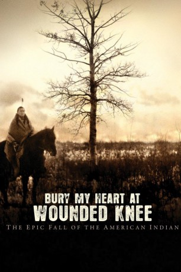

#3570 Begrabt mein Herz am Wounded Knee
Alternativ: Bury My Heart at Wounded Knee
 
 IMDB-Wertung: 7.2 / 10
IMDB-Wertung: 7.2 / 10  Metascore: 0
Metascore: 0 
Der Film beginnt unmittelbar nach dem blutigen Sieg der Sioux Indianer über General Custer am Little Big Horn und erzählt die folgenden Geschehnisse aus zwei unterschiedlichen Perspektiven. Zum einen Charles Eastman, ein junger, von Weißen ausgebildeter Sioux Arzt, der als lebender Beweis für die vorgeblich gelungene Eingliederung herhalten muss, und zum anderen Sitting Bull, der stolze Lakota Häuptling, der den letzten bedeutsamen indianischen Sieg am Little Big Horn erringen konnte.
Jahr: 2007
Dauer: 127 Minuten
FSK:
Land: USA Studio: HBOTonspuren: DD2.0 - ,
Untertitel: Englisch, , ,
Auflösung: 720p (1280x720) Größe: 3000 MB
Genre: Drama, Western, Geschichte
Regisseur: Yves Simoneau
Drehbuch: Shem Bitterman
Soundtrack:
Darsteller:
 Anna Paquin als Elaine Goodale
Anna Paquin als Elaine Goodale- Chevez Ezaneh als Ohiyesa / Young Charles
 August Schellenberg als Sitting Bull
August Schellenberg als Sitting Bull- Duane Howard als Uncle
 Aidan Quinn als Henry Dawes
Aidan Quinn als Henry Dawes Colm Feore als General Sherman
Colm Feore als General Sherman Fred Dalton Thompson als President Ulysses S. Grant
Fred Dalton Thompson als President Ulysses S. Grant- Shaun Johnston als Col. Nelson Miles
 Gordon Tootoosis als Chief Red Cloud
Gordon Tootoosis als Chief Red Cloud Eddie Spears als Chasing Crane
Eddie Spears als Chasing Crane- Sean Wei Mah als Bull Head
 Eric Schweig als Gall
Eric Schweig als Gall- Jayson Therrien als Soldier
- Chantal Perron als Teacher
 Patrick St. Esprit als Major Walsh
Patrick St. Esprit als Major Walsh Adam Beach als Charles Eastman
Adam Beach als Charles Eastman- Nakotah LaRance als Crow Foot
 Michelle Thrush als Four Robes
Michelle Thrush als Four Robes J.K. Simmons als James McLaughlin
J.K. Simmons als James McLaughlin Tom Carey als Issue Clerk
Tom Carey als Issue Clerk Lee Tergesen als Daniel Royer
Lee Tergesen als Daniel Royer- Scott McAdam als Photographer
 Wes Studi als Wovoka / Jack Wilson
Wes Studi als Wovoka / Jack Wilson Hrothgar Mathews als Reverend Woods
Hrothgar Mathews als Reverend Woods- Tokala Clifford als Little Wolf
- Brian Copping als Secretary
- Wendy Lumby als Native Townfolk
- Nathan Lee Chasing His Horse als One Bull
- Wayne Charles Baker als Jacob
- Brian Stollery als Bishop Whipple
- Billy Merasty als Young Man Afraid
- Morris Birdyellowhead als American Horse
- Holly Bird als Scarlet Whirlwind
- Star Birdyellowhead als Bull Head's Wife
- David Cowley als Mountie
- Jemma Blackwell als Woman
- Laura Bachynski als Mrs. Goodale
- Barbara Scout als Singing Sioux Woman
- David Bigchild als Sergeant / Horse Thief
- Jim Rattai als Crier
- Jonathan Fox als Chasing Crane's Son
- Jason Blackhorse als Young Sioux Man
- Jonathan Brewer als Village Man
- Robert Big Sorrel Horse als Village Man
- Marty Antonini als Colonel James Forsyth
 Jimmy Herman als Yellow Bird
Jimmy Herman als Yellow Bird- Sheldon Maxwell als Sergeant
Datei: X:\HD-Western-2000-2015\Begrabt mein Herz am Wounded Knee (2007, FSK, 1280x720).mkv seit 03.05.2016
Festplatte: HD Eastern+Western
 Es gibt insgesamt 61 Filme in der Gruppe 'HD-Western-2000-2015'
Es gibt insgesamt 61 Filme in der Gruppe 'HD-Western-2000-2015'